DISCLAIMER
This section focuses on major civilizations that played an important role in the
development of human history.
It does not attempt to include every society or regional culture.
The aim is to provide a clear historical overview and share knowledge,
rather than define a single or absolute interpretation of history.
本セクションでは、人類史の形成において重要な役割を果たした主要な文明を中心に取り上げている。
すべての社会や地域文化を網羅するものではない。
歴史の唯一の正解を示すことではなく、理解を深めるための知識共有を目的としている。
Mesopotamian Civilization
メソポタミア文明
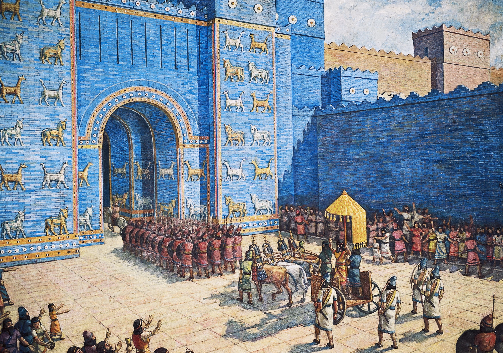
Era: c. 3500 BCE
Region: Tigris–Euphrates River basin (mainly modern-day Iraq, partly Syria and Turkey)
The Mesopotamian Civilization is widely regarded as the world’s first civilization. It grew through
irrigation farming and city-states, and is known for cuneiform writing, early law, and organized
urban life that influenced later civilizations.
年代: 紀元前3500年頃
地域: チグリス川・ユーフラテス川流域（現在の主にイラク、一部はシリア・トルコ）
メソポタミア文明は世界最古級の文明とされ、灌漑農業と都市国家の発展を背景に栄えた。楔形文字や法制度、都市の運営など、人類文明の基礎を形づくった。
0
♥
Ancient Egyptian Civilization
古代エジプト文明
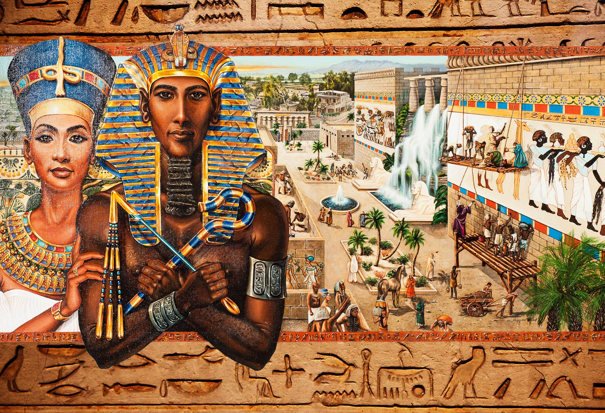
Era: c. 3100 BCE
Region: Nile River Valley (modern-day Egypt)
Ancient Egypt developed along the Nile’s predictable floods, enabling stable agriculture and a
powerful centralized state. It is famous for pyramids and temples, and for religious beliefs
centered on the afterlife.
年代: 紀元前3100年頃
地域: ナイル川流域（現在のエジプト）
古代エジプト文明はナイル川の恵みにより安定した農業が成立し、中央集権国家として発展した。ピラミッドや神殿、死後の世界観を重視する宗教文化が特徴である。
0
♥
Indus Valley Civilization
インダス文明
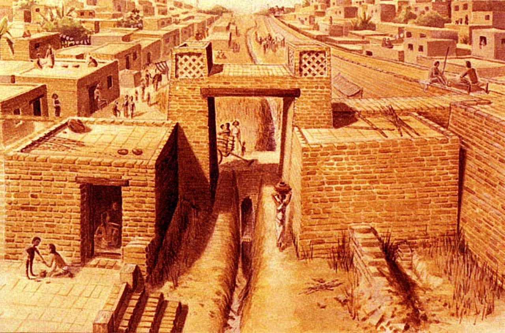
Era: c. 2600 BCE
Region: Indus River basin (modern Pakistan and northwest India)
The Indus Valley Civilization is known for planned cities with grid layouts and advanced drainage
systems. Major sites like Harappa and Mohenjo-daro show high organization and urban technology.
年代: 紀元前2600年頃
地域: インダス川流域（現在のパキスタン、北西インド）
インダス文明は碁盤目状の都市設計や高度な排水設備で知られる。ハラッパーやモヘンジョ・ダロなどから、高い都市運営能力がうかがえる。
0
♥
Chinese Civilization (Yellow River)
中国文明（黄河文明）
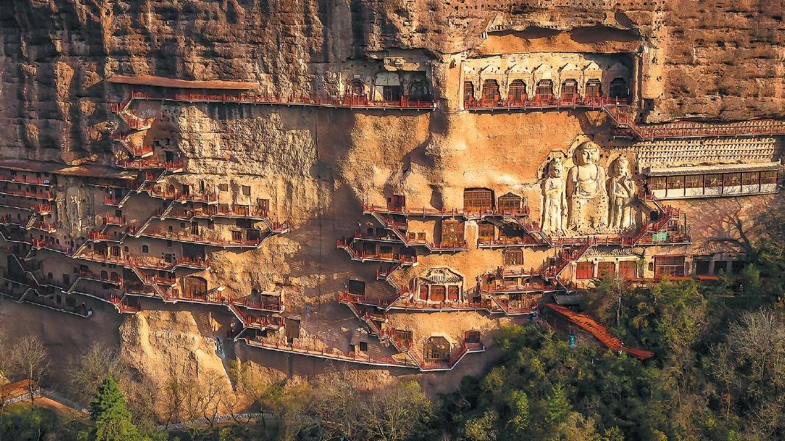
Era: c. 2000 BCE
Region: Yellow River basin (northern China)
Chinese civilization emerged in the Yellow River region with early states, bronze culture, and
expanding agriculture. A key feature is long cultural continuity across many dynasties.
年代: 紀元前2000年頃
地域: 黄河流域（中国北部）
中国文明（黄河文明）は農業や青銅器文化、国家形成が進んだ地域を起点として発展した。王朝が変わっても文化が連続しやすい点が大きな特徴である。
0
♥
Ancient Greek Civilization
古代ギリシャ文明
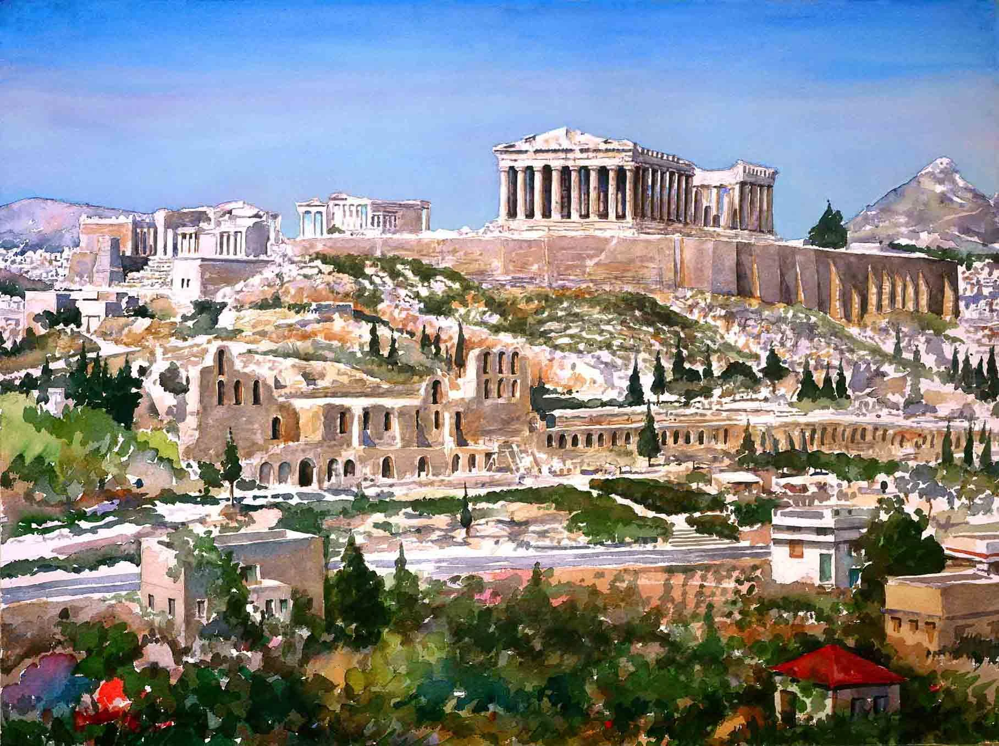
Era: c. 800 BCE
Region: Aegean region (modern Greece and western Turkey)
Ancient Greece shaped philosophy, politics, and science through rational inquiry and debate. Ideas
like democracy and classical art traditions influenced later Mediterranean and modern societies.
年代: 紀元前800年頃
地域: エーゲ海沿岸（現在のギリシャ、西トルコ）
古代ギリシャ文明は理性と議論を重視し、哲学・政治・科学・芸術の基礎を築いた。民主政治や古典文化は後世に強い影響を与えた。
0
♥
Roman Civilization
ローマ文明
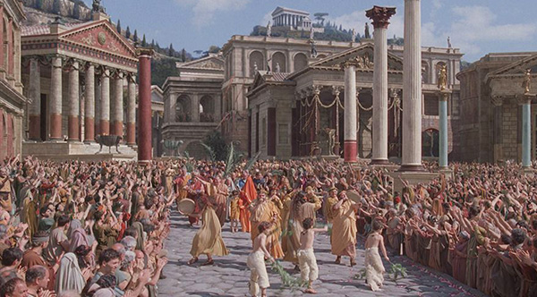
Era: c. 500 BCE – 476 CE
Region: Mediterranean region (centered in Rome)
Rome expanded Greek influence and built powerful systems of law, engineering, and administration.
Through its empire, Roman institutions shaped Europe and the Mediterranean for centuries.
年代: 紀元前500年頃〜西暦476年
地域: 地中海世界（中心：ローマ）
ローマ文明は法制度・土木技術・行政を発展させ、帝国の拡大を通して地中海世界に大きな影響を及ぼした。西洋文明の基盤の一つである。
0
♥
Maya Civilization
マヤ文明
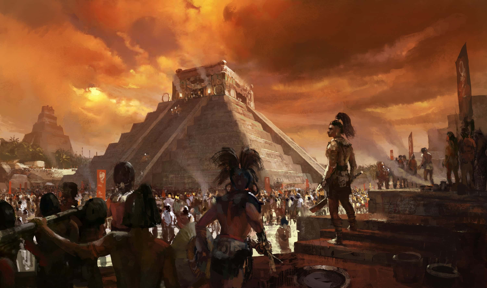
Era: c. 250 CE
Region: Yucatán Peninsula and Central America
The Maya Civilization is known for advanced mathematics, astronomy, and writing systems. Its
city-states created complex calendars, monumental architecture, and rich intellectual traditions.
年代: 西暦250年頃
地域: ユカタン半島・中央アメリカ
マヤ文明は数学・天文学・文字体系に優れ、都市国家が発達した。暦の体系や壮大な建築、知的文化の高度さが特徴である。
0
♥
Medieval European Civilization
中世ヨーロッパ文明
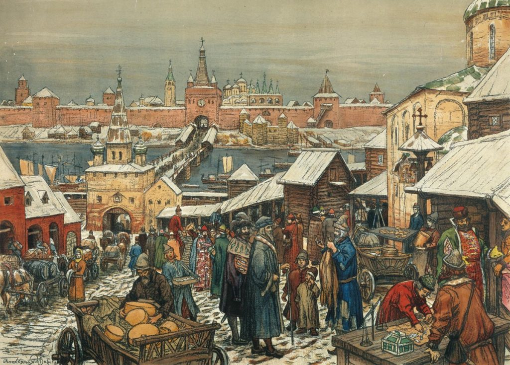
Era: c. 500 CE
Region: Europe
Medieval Europe formed after the fall of Rome, shaped by feudal relationships and the influence of
Christianity. Over time, towns and universities grew, preparing the path toward later change.
年代: 5世紀頃（西暦500年頃）〜
地域: ヨーロッパ
中世ヨーロッパ文明はローマ崩壊後に形成され、封建制度とキリスト教の影響が社会を形づくった。都市と大学の発展が、後の変化への土台となった。
0
♥
Islamic Civilization
イスラム文明
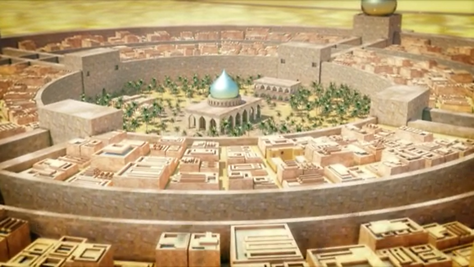
Era: 7th century CE
Region: Middle East, North Africa, parts of Europe and Asia
Islamic Civilization became a major center of learning and exchange. Scholars advanced mathematics,
medicine, and philosophy, preserving and expanding classical knowledge and spreading it widely.
年代: 7世紀〜
地域: 中東・北アフリカ・ヨーロッパ南部・アジア
イスラム文明は学問と交易の中心地を形成し、数学・医学・哲学などを発展させた。古典知識の保存と発展、広域への伝播に大きく貢献した。
0
♥
Inca Civilization
インカ文明
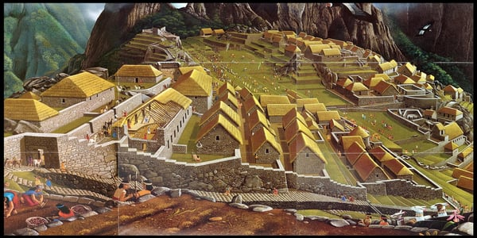
Era: 13th century CE
Region: Andes Mountains (western South America)
The Inca built the largest empire in pre-Columbian America, supported by roads, terraces, and
centralized administration. It managed complex governance across vast terrain.
年代: 13世紀頃
地域: アンデス山脈地域（南アメリカ西部）
インカ文明は道路網や段々畑、中央集権的統治によって支えられ、アメリカ大陸最大級の帝国を築いた。広大で険しい地形を組織的に運営した点が特徴である。
0
♥
Aztec Civilization
アステカ文明
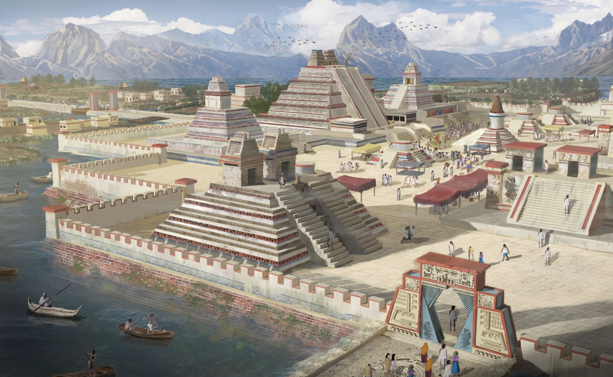
Era: 14th century CE
Region: Central Mexico (Tenochtitlan)
The Aztec Civilization was a powerful Mesoamerican society centered on Tenochtitlan. It developed
strong political organization, monumental architecture, and a complex religious worldview.
年代: 14世紀頃
地域: メキシコ中央部（テノチティトラン）
アステカ文明は首都テノチティトランを中心に発展した強大な文明である。政治組織、巨大建築、宗教世界観の複雑さが特徴である。
0
♥
Industrial / Modern / Contemporary (Digital) Civilization
産業・近代・現代文明（情報・デジタル文明）
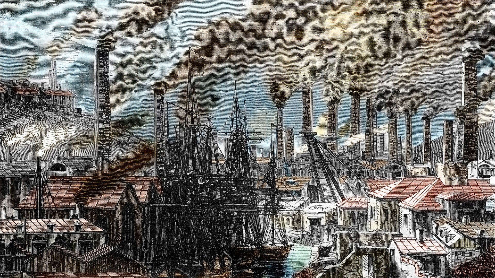
Era: 18th century CE – present
Region: Global
From industrialization to the digital age, modern civilization has been shaped by mechanization,
nation-states, globalization, and rapid information exchange. Computing and networks have
transformed work, culture, and knowledge-sharing worldwide.
年代: 18世紀〜現在
地域: 世界全体
産業革命以降の文明は、機械化・国民国家・グローバル化・情報の高速流通によって特徴づけられる。コンピュータとネットワークの発展が、働き方・文化・知識共有の形を世界規模で変えた。
0
♥
Insight
Civilization did not develop in a single line or region. Multiple civilizations emerged independently
across the world, shaped by geography, resources, and social needs.
文明は一つの地域から直線的に発展したわけではない。地理・資源・社会的必要性によって、世界各地で独立して誕生した。